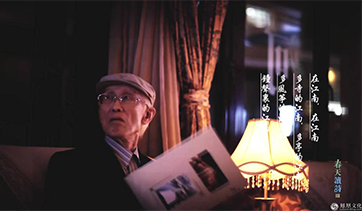
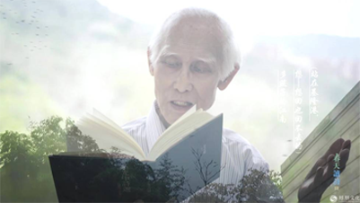
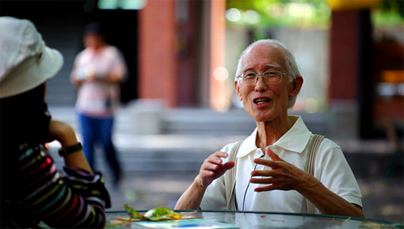

Guangzhong Yu, living in the language of the nation
Guangzhong Yu, a famous poet and writer in Taiwan, died on December 14, 2017. The death of the old gentleman is a year of sorrow, and there is no pain when he walks. It is absolutely mourning. The 90 years of Guangzhong Yu's life can be described as the most unsettled 90 years in China. He has been performing various tragedies of war and man-made disasters and deaths. In addition to his childhood, Guangzhong Yu had a few days of escaping with his mother in order to escape the war. Born in this world, it is a great blessing and a great accomplishment to be able to complete a life so peacefully.

Guangzhong Yu has been racing in the literary world. His works are extremely rich, and he has made achievements in the fields of poetry, prose, commentary and translation. Chen Fangming, who has had complicated entanglements with Guangzhong Yu, is objective in his evaluation of Guangzhong Yu: "With poetry as the classics and literature as the latitude, the artistic production of more than half a century is remarkable; it is not an author's success. It should also be an important indicator of Taiwan's literary creativity."
Guangzhong Yu was 20 years old and published the first collection of poems on the mainland. I first read the poems of Guangzhong Yu, which is the Star Poetry in Sichuan. In 1982, the poet Liu Shahe opened a column there, called "Twelve Taiwanese poets", with articles on introduction and appreciation, followed by poets' poems. At that time, Guangzhong Yu’s "Homesickness" was not as famous as it is today. I am 13 years old and I am on the second day. Needless to say, the poetry of the Taiwanese poet opened my eyes and the courage to write poetry became bigger. At the beginning of the article, Liushahe cited the famous article "When I die":
When I died, I buried my
head, my head between the Yangtze River and the Yellow River , white hair covered with black soil
in China, the most beautiful mother. In the country,
I will sleep peacefully, sleep on the whole continent and
I will sleep peacefully, sleep on the whole continent and
listen to both sides. The soul of the soul begins from the Yangtze River, the Yellow River.
Two tubes of eternal music, oh, facing the east,
this is the most indulgent and widest bed,
letting a heart fall asleep, satisfying the thought...
This is probably the first poem I read in Guangzhong Yu, as if writing for today. Nowadays, he has "suddenly slept and slept the whole continent", and he can "listen to both sides. The soul of the soul is from the Yangtze River, the Yellow River / two tubes of eternal music, oh, east." In the early 1980s, I was shocked when I read such a poem. The waves provoked by my young mind are no less than the first time a child sees a VR image. When I was in high school, I could write poems that were edited as avant-garde, which is inseparable from this reading experience.

Today, when the mainland talks about Guangzhong Yu, he is talking about his poem "Homesickness", and he often calls him "the nostalgic poet". It seems that he only wrote this poem. This is his luck and his misfortune. Fortunately, he has a poem that allows so many people to know and remember; unfortunately, this kind of remember makes his literary face appear singular, even simplification and dwarf. This "poetry" has existed since ancient times, but if you only go to this poem, you think that you have recognized a poet and may be regarded as the saddest thing by the poet.
Guangzhong Yu is actually a poet with a variety of poetry styles. He has written more than 800 poems before and after. As he said, he is a "polygamous". He was born in English in his early years, and he went to the United States to study and teach books. His early poems were deeply influenced by Western modern poetry, but his modernity and the post-1980s continent were not based on the tone of the New Moon School and the May Fourth New Poetry. The style of modern poetry is not the same. After the 1960s, he began to turn his attention to Chinese classical literature, hoping that he could transform the tradition. The poetry completely went out of the western style and wanted to create in the classical rhythm. The poetry showed the traditional side. As he said: "In childhood, the nib of the pen is not the aftermath of Heaton Klein, it is the river of the Thai gentleman. It is nothing more than the wine of 1842. In the middle age, the sadness, feelings At the beginning, the pen knows how to stretch back, stretch out to the mainland, go to the sorrowful stream of tears, the cold wave of easy water, go to the song Chuchen, mourn the Han, and the most sensitive soul in ancient times, Chen Ziang in Youzhou On the stage, he lifted a lift bar." Later, inspired by American rock music, he began to pay attention to drawing nutrition from folk songs, and began to pursue the musicality and abominability of poetry. Often poetry is as simple as lyrics, suitable for jealousy. A poem of nostalgia is the product of that time.
不过，余光中无论歌咏乡愁亲情，还是吟诵汉魂唐魄，或是悲叹现实沦落，他骨子里还是一个中国古典文人的情怀。在他那一代诗人中，他或许是激烈的，他会哀叹“中国中国你是不治的胃病”“中国中国你令我早衰”“中国啊中国你逼我发狂”，但在1990年代后的大陆现代诗人眼中，他的诗仍偏于传统，这或许是一个诗人难以摆脱的时代性，但从某种程度上看，这也是余光中自觉的追求。如他所言“一位诗人最大的安慰, 是为自己的民族所热爱，且活在民族的语文中。当我死时，只要确信自己能活在中文最美丽、最母亲的中文里, 仅此一念，即可含笑螟目。”从今天他逝去后大陆民众的反应看，他做到了。
However, whether Guangzhong Yu is singing a homesick relationship, or a soul-stricken Tang Yan, or lamenting the reality, he is still a Chinese classical literati. Among his generation of poets, he may be fierce. He will lament that "China and China are incurable stomach problems." "China and China, you make me premature." "China, China, you push me crazy," but after the 1990s, the mainland In the eyes of modern poets, his poems are still biased towards tradition. This may be a time that poets can't get rid of, but to a certain extent, this is also the conscious pursuit of Guangzhong Yu. As he said, “The greatest comfort of a poet is to love his own nation and live in the language of the nation. When I die, just be sure that I can live in the most beautiful and motherly Chinese in Chinese, only This thought can be a smile." From the reaction of the mainland people after his death today, he did.
Among his generation of poets, Guangzhong Yu is undoubtedly a poet with a clear sense of language. This is related to his early years of English learning and translation experience, and also related to his profound classical literature. This kind of linguistic awareness, perhaps many contemporary modern poets do not agree or dislike, but it is a direction of hard work. In Guangzhong Yu's view, the relationship between "authentic Chinese" and the Chinese people is becoming increasingly unfamiliar, including classical Chinese and folk spoken. Therefore, his later poems, including his prose, are trying to restore "authentic Chinese" and "the original virtue." In the familiar light of Guangzhong Yu, the wording is concise, the sentence is flexible, and the tone is ambiguous, which is the ecology of Chinese. His language may be conservative to others, but for Guangzhong Yu, it has always been his experiment in Chinese innovation. He has always expected Chinese "slow and moderate westernization" and "high-spirited westernization". He believes that "too fast and too strong westernization" will destroy the natural ecology of Chinese. Therefore, he criticized Ai Qing and said that "in the new poet, the lameness of Chinese and the cumbersome syntax. Few people are comparable to Ai Qing."
From the perspective of language and style, Guangzhong Yu's prose realizes his own ideals. He pays attention to the rhythm, monotony, chapters and syntactic changes of the text, pays attention to "sound and timbre, the connection between the ancient and the modern, the sympathy between China and the West", pays attention to the absorption of "the strictness of the classical Chinese, the English subject and the user", the "speed, density and flexibility" of the test language. The article is good to read and not stereotyped. It does indeed "let the Chinese characters symphonize into a big band in the different syntax." But this is still only the pursuit of language. The realm of prose is not completely determined by language. The weight of the writer's life experience and survival experience often determines the weight of the article. Guangzhong Yu’s prose does reflect the healthy and sincere emotional world of a Chinese literati. The family is always, the old country and the natural mountains and rivers are all in his articles, but because he has been very successful in his life, he has lived in the study for many years, although he has got rid of it. Some of the problems with his "pseudo-scholar essays", but his essays are still not enough in the depth of life experience. This may be the price a writer must pay for a lifetime.

Guangzhong Yu has been a professor for a lifetime, but he is still a poet in his bones. Compared with his poems and articles, his comments seem more realistic. In the 1970s, he proposed to "rewrite" the history of new literature, and had serious criticisms of Dai Wangshu's poems, Zhu Ziqing's essays, and Ai Qing's poems. He criticized Zhu Ziqing's prose as "vulgar and shallow", "funny and contradictory", and made a demonstration in "sad sentiment and other aspects"; he believed that Zhu Ziqing's prose "imagination is not enough, so the text of writing is close to meticulous, lacking reading and throughput. "The trend"; "his changes in syntax are small, sometimes too cumbersome, and a little European. His metaphor is too obvious, the image is too narrow, as for the sensibility, it is still in the agricultural era, too soft and old. His creative years, whether writing poetry or prose, are short-lived, with little yield and little change."
He commented on Dai Wangshu: "His production is small, the pattern is small, the subject matter is not wide, and there are not many changes. His poetry is not enough in depth and intellectuality. He is quite sensible, but often confused with details. In the mood, he failed to approach reality. He was influenced by classical and Western, but he was not fully digested and reconciled. His language was ill and was unable to exert the power of Chinese. His poetry was in the first place. In the narrow and sentimental world of his own, he will face the reality of the war of resistance and fail to fully open himself and grasp the times. If Dai Wangshu does not die in the prime of life, there may be higher achievements. This is of course only a wishful thinking. Because the famous writers of the 1930s, after 1949, they are unsustainable in their creations, no matter how high they are."
Perhaps only Guangzhong Yu, a poet professor of true nature, dared to evaluate his predecessors. He has also been involved in some confrontations in the Taiwanese literary world. In 1977, he published the article "Wolf Comes" in the "United Daily News" until more than 10 years ago caused controversy in the mainland cultural circles. In that article, what he opposed was actually the literature of workers, peasants and soldiers. He believed that "the so-called 'work, peasant and peasant literature and art' is precisely one of the types of class struggle, literature and art", and said that "the current domestic advocates of 'work, agriculture, literary and art' people" If you don't understand the meaning behind it, it is innocent and ignorant; if you understand the meaning behind it and openly advocate it, it is not only innocent and ignorant." The meaning here is very clear, I think these views are from the perspective of mainlanders. There is nothing wrong with it. Unlike Chen Guying’s comment on Guangzhong Yu’s “decadence consciousness, eroticism and exile mentality”, most of them are misinterpretations or out of context in Guangzhong Yu’s poetry. This debate is nothing more than two "ideal confrontations", which have nothing to do with literary opinions. Which side is more reasonable, I think history has given the answer.
Even so, Guangzhong Yu explained and reflected on this in his later years: "A "Wolf is coming" is a bad article, so it is necessary to put it back on the historical background to understand. In 1977, the mainland just experienced the 'Cultural Revolution.' ', the respite is not over. The intellectuals who suffered in the catastrophe are hard to count. I went to Hong Kong to teach in 1974, and I am no stranger to the 'Cultural Revolution'. I was a student in my class, I was in Guangdong, often to me. I personally described the truth of the 'Cultural Revolution'. I went to Hong Kong shortly, because I criticized the 'Cultural Revolution' in the poem, and recruited the encirclement of the 'Left Newspaper' and 'Left Magazine'. The attack on my text was more than 100,000 words, which made me feel quite 'Lonely anger'. A newspaper has published a long poem, there is such a sentence: "Workers hammer, your 'white jerky bitter gourd' knocked down! "... Under the pressure of the 'Cultural Revolution', the mood is heavy, and it is very sensitive to the general left-leaning speech. The deeper the thinking about Kyushu Township, the stronger the fear of reality, the contradiction between them can be seen in my verse "Ill Syphilis is still the mother. The overseas "leftist" read this sentence, only see "syphilis" and not "mother", often reprimanded as "anti-China." This is the mood of writing "Wolf" in Hong Kong, but not Therefore, it is said that the article should be written like that. At that time, the emotions were out of control, not only the wording was rough, but also the tone was fierce, not like the cultivation that a liberal writer should have. The political comparison with the innuendo was also exaggerated, it is noisy, no wonder. Giving people a handle, suspicion is a rectification movement against the Kuomintang.
In fact, this article did not let the local writers suffer bad luck, but has been on the line, it is a bit unintelligible. Yu Guang’s views in China are much more moderate than those he accused of “Chongyang Meiwai”, “Eroticism”, “Decadence Consciousness”, “Poor and awkward face and bad habits”. According to Chen Yingzhen himself, Guangzhong Yu later said to him in a private letter: "I am very hurtful to you and say sorry to you." "Please accept my greatest apology, goodwill, sincerity..." It is the aggressiveness of Chen Yingzhen. It doesn't make people understand.
Speaking of these past events, one wants to let Guangzhong Yu be a reader of a nostalgic poet, to understand his truthfulness and richness. Second, because he heard that today, the younger generation of Taiwanese poets still have events, in Guangzhong Yu. It still "somewhat makes us wonder how it is good". Because of a "Wolf is coming", "I can't like the poems of Guangzhong Yu", for Taiwanese poets, it seems to be an inevitable choice for "a 'political correct'." Guangzhong Yu's poems are indeed "nationals". The beauty of love and homesickness, less the pleasure of "rebellious and escape" and "reflection" that poets need, which is related to his political judgment on the mainland and his feelings about Chinese literati, according to which he There is entanglement in power, and it is obviously biased.
Mr. Guangzhong Yu once confessed: "I have been arguing for a lifetime, and I have used poetry as a text, and on the subject of literature, and on the basis of the translation of the poems, it is a bit of 'sports and incest'. However, Cangjie or Liu Wei, probably will not blame me. Write and write, the style changes, there is one thing that is unchanged, that is my love for Chinese. If Chinese culture is a big circle, Hongmei's Chinese is its radius; I hope I can It stretches longer."
This is the truth of the gentleman.